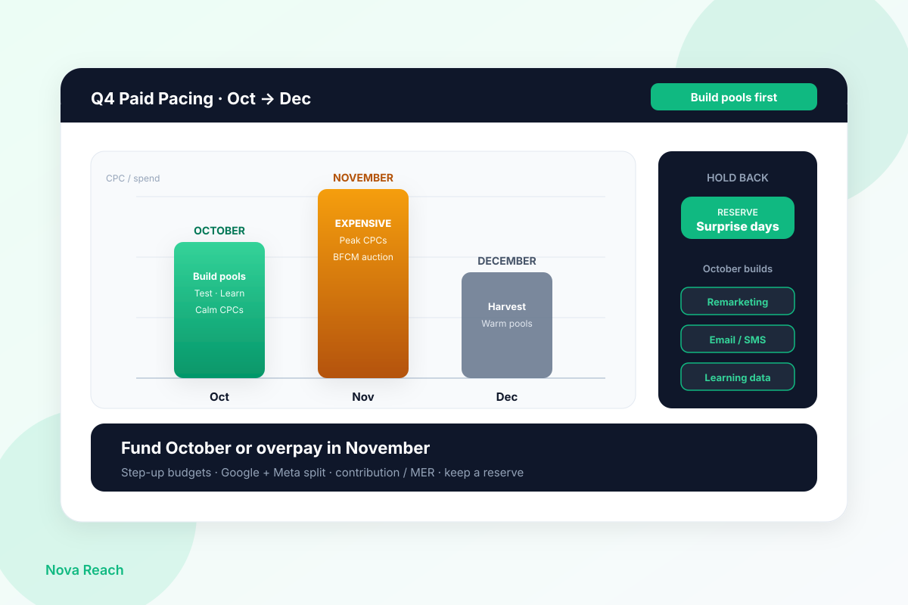

Every October I watch NZ and AU Shopify brands do the same thing with paid: throttle Google and Meta to a whisper, “save” the budget for Black Friday week, then dump three months of spend into seven days of the year’s most expensive auctions.
That is not discipline. It is starving the month that builds the pools you need to feast. October CPCs and CPMs are still relatively calm. Every visitor you buy then fills remarketing audiences, email/SMS lists, and campaign learning you monetise in November at a fraction of cold acquisition cost. Starve October and you enter peak with empty pools, cold campaigns, and a credit card aimed at the auction.
I run full-funnel ecommerce from Christchurch — SEO, Google Ads, Meta, CRO, Klaviyo. This is the Q4 pacing conversation I have with stores before anyone locks the October budget in a drawer marked BFCM.
Why “save it for Black Friday” usually backfires
Black Friday / Cyber Monday week is when every competitor with a Shopify store and a pulse is bidding. CPCs on Google and CPMs on Meta jump. That is normal. What is not normal is arriving at that week with:
- Remarketing audiences too thin to spend (or filled with people who last visited in August).
- Prospecting campaigns still in learning because you paused them for six weeks “to save money.”
- No warm email or SMS cohort to support paid — so every sale has to be bought cold at peak prices.
You did not save money. You deferred spend into the most expensive inventory window of the year, then wondered why MER collapsed.
💡 Pro Tip
Pull last year’s daily spend and CPA for Oct 1–Nov 30 in NZD or AUD. If October spend is a cliff and November is a spike while CPA doubles, you already have the pacing problem on paper — you just have not named it yet.
October’s real job: pools, learning, and calm auctions
Treat October as infrastructure month, not a dead zone before the “real” campaign.
1. Remarketing pools. Site visitors, view-content, add-to-cart, and initiate-checkout audiences need volume. A visitor you bought at October CPC rates is an asset you retarget in November when cold traffic costs more.
2. Email and SMS lists. Paid should feed capture — not only last-click purchases. Welcome and browse flows turn October traffic into owned demand you do not re-auction in peak week.
3. Learning and creative/offer signal. Keep Google and Meta campaigns active enough that algorithms see conversions. Cold-starting a prospecting campaign two days before BFCM is how you pay to retrain the machine during the most expensive week of the year.
4. Calm CPCs. You will not get July prices in October — but you will usually beat mid-November. Use that window to buy the visitors who become November buyers.
💡 Pro Tip
Judge October on contribution and MER, not vanity ROAS alone. A slightly softer October ROAS that fills a 30-day view-content audience and a clean email capture path often pays for itself in the first week of November.
A practical Google + Meta split for NZ/AU stores
There is no universal percentage — category, margins, and brand search volume matter — but the pacing logic is consistent:
- Google: Protect brand and high-intent non-brand that already converts. Keep Shopping / Performance Max warm through October so you are not re-entering learning when auction pressure peaks. Cap experiments; do not pause proven queries to “save” for one week.
- Meta: Keep a steady prospecting line and a healthy retargeting line. October is when retargeting gets its fuel. If you starve prospecting all month, retargeting has nothing to harvest in November.
- Owned: Every paid click should have a clear path into email/SMS where the offer and freight story match the ad. Paid that never lands in a list is rent with no equity.
Read results in NZD or AUD against contribution margin — not platform ROAS in isolation. Platforms will always look cleverer than your P&L if you let them.
Pace with step-ups, headroom, and a reserve
How you move budget matters as much as how much you have.
- Daily budgets with headroom. If a campaign consistently hits 100% of budget by midday NZ/AU time, you are capping delivery before the evening auction. Raise daily enough that good days can spend — then watch MER, not just spend.
- Step-ups, not doubles. Moving from a starved October into a 2× or 3× overnight spike on November 20 resets learning and floods cold traffic. Prefer staged increases (roughly 15–30% every few days) once pools and creatives are ready.
- Hold a reserve. Keep a slice of Q4 budget uncommitted for surprise days — a viral SKU, a competitor stock-out, a weather-driven spike. The brand that can add spend on Tuesday afternoon without raiding brand search wins more often than the brand that front-loaded everything into a single BFCM flight.
- December harvest. Plan a taper, not a cliff. Warm audiences and email cohorts should keep working after Cyber Monday while cold prospecting eases off.
If finance only releases budget in one November lump, renegotiate the release schedule. Pacing is a cash-timing problem as often as a media problem.
What “good” October pacing looks like
You are on track when, by late October:
- Remarketing audiences have meaningful 7–30 day volume, not a handful of shoppers.
- Prospecting campaigns are out of (or stably through) learning with a CPA/MER you would accept at scale.
- Email/SMS welcome and browse flows are live and fed by paid traffic.
- You still have a defined reserve for peak week — not 100% of Q4 already committed to one flight.
- Google and Meta both have a clear role; neither is paused “until Black Friday.”
If those boxes are empty, spending harder in November will not invent the pools. It will only buy colder, dearer clicks.
An October checklist (before you feast in November)
- Map Q4 paid in NZD/AUD across Oct / Nov / Dec — not a single BFCM week lump.
- Keep Google + Meta warm; fund October enough to fill remarketing and email pools.
- Judge on contribution and MER, not vanity ROAS alone.
- Use daily budgets with headroom; step budgets up — do not double overnight into peak.
- Hold a reserve for surprise high-intent days.
- Confirm owned channels (welcome, browse, abandon) are live before you scale paid into November.
Fund October or overpay in November. Black Friday rewards the stores that already have warm demand — not the ones who tried to buy it all in one week.
If you want a second set of eyes on your Q4 pacing, Google/Meta split, and whether October is actually building pools — request a free store audit. I look at spend curves and audience sizes myself and tell you where I’d reallocate before peak week.
Fix Q4 paid pacing in October — before Black Friday turns empty pools into expensive clicks.
Send your Oct–Dec budget plan (or a Loom of Ads Manager + Meta). I’ll reply within one business day (Christchurch time) with the three pacing moves I’d make first.
Get a free store audit